Starting out on Game Programming
Last Updated 7/24/17
The path to game development is a long one. This article is here to give you an idea where to go to help you out on your journey.
So you've just finished your first semester of C++ and you want to start making games.
Somebody pointed you to this site and you've been playing around with the tutorials.
You learned some neat stuff but there's no tutorials to make a full game.
There's a reason for that.
Tutorials are great for teaching you how to do something step by step like how to move a dot around on the screen. To put a game together you need problem solving skills and that's something you learn through experience. It's not something that can be given through a tutorial. The best way to learn to make games is to start making them.
In your early projects especially your number one goal is to learn, not Cool Ideas. By keeping your project small, you can focus on learning new techniques instead of spending hours managing source code and refactoring. While your Cool Idea may be awesomely awesome, the reality of software development is that the bigger the project the more likely you are to make a mistake in the design. And a mistake in the design is much more costly the larger the project is.
Remember the story of Daedalus and his son Icarus. Daedalus made wings out of wax and feathers for him and his son. Daedalus warned his son not to fly too close to the sun with his new wings. Icarus ignored this and his wings melted and that's when gravity had its way with him.
So remember not to fly too close to the sun with your new coding wings.
With all that in mind here's some tips on where to go.
Make sure to keep it simple so you finish it and don't lose interest halfway through and never finish your game. It's important to get your games done because you're not learning the game development process if you have a bunch of half finished games on your computer.
There's one thing I want to point out for those doing Tic Tac Toe or Connect Four. AI is something you don't want to worry about too much for now. Making your game two player only or with a computer opponent that does moves at random is good enough when you're starting out.
If you've done graphics and event handling before and you're comfortable with it, you can try and go directly to the next step.
Duck Hunt and Pong are good first projects for those who have done graphics and events before. They have simple collision detection and all the important basics of real time games.
Space Invaders and Galaga make good second/third projects. They have levels so you'll have to know how to move from level to level using a state machine. You can read more about state machines here. Shoot 'em ups also require you make some sort of simple enemy patterns which serves as a stepping stone to Artificial Intelligence.
Tetris makes a good second/third project. There's quite a bit of logic that goes into make a puzzle game. It's a decent size game so you'll have to learn you to split your program into multiple source files, which you can read more about here. Don't underestimate Tetris. I did and just look at the garbled mess that is the Lazy Blocks source code.
I over engineered in my newbie days when I made made the AI for my Tic Tac Toe game. I wanted to make a game with unbeatable AI. I managed to get it done by programming the computer to know every possible trap. Sounds great doesn't it? This took over 40,000 lines of mostly copy/pasted code and a month of my free time. Later on as I studied data structures, I found out about the Minimax Algorithm which not only can do it with much less code, it can also do it better.
So learn from my mistakes and don't get overly ambitious. You're focusing on learning how to make games, not just making them.
Up until now you've probably been coding as you go. That ends here. In the real world most of the software development process is done before a single line of code is typed. Nothing sucks worse than wanting to add something to your game and realizing you'll have to throw out all your code because you didn't plan ahead. Now that you have experience making games, you know what the game development process consists of. Now you can plan out your games before you make them.
Now onto your next game. Break Out and Puzzle Bobble are good 3rd projects because they involve some more advanced collision detection and physics. Physics is important because it gives the game a realistic feel. Even Super Mario Brothers had a sense of gravity and inertia. For those of you really looking to flex your physics muscle, a pool game is an excellent project.
With games like pool you not only have to detect collisions, you'll need to have to process them in a certain order. Handling collisions is a whole different beast when comparing to collision detection. While make pool or a 2D platformer may look simple, doing collision resolution operations in the right order is a tricky process not to be underestimated.
Break out and Puzzle Bobble also involve level design and having to load and free level resources. It's good experience to make a level design application for game. Level design programs allow you to easily make levels and not have to hard code your levels into your application. I have an article on making a level editor, you can check it out here.
Another thing you want to practice is Artificial Intelligence (AI). One way to practice AI is you could go back to your Tic Tac Toe or Connect Four game and add unbeatable AI. By now you should know data structures and you can use your knowledge of trees to use the Minimax Algorithm. With the Minimax Algorithm you can calculate every possible outcome of you Tic Tac Toe game and have the AI be undefeatable. It's fun to frustrate your friends with. You probably want to also learn to make varying levels of AI. A game isn't fun if you can never win.
Pac Man is an excellent way to practice AI. For one thing you need to know tree/graph data structures, and path finding algorithms like A* so the ghosts know how to move through the maze. You also have to make the ghosts work as a team. All this will be useful when making AI heavy games like Real Time Strategies. You can read more about the basics of AI here.
RPGs are highly architectural, and require a lot of planning. You need plan out every weapon, armor, accessory, attack, item, spell, summon, enemy, map, boss, dungeon, you-name-it down to the littlest detail. It all has to go together seamlessly and it's not an easy task to say the least. So if your design document looks like a movie script or comic, your RPG needs a lot more work.
RTSs are just as architectural, but they also require a lot of AI. You have to do path finding, have them accept commands, and give them different behaviors based on the commands. If you've never done anything with AI before, it would best if you made a Pac Man clone first.
This will probably be the first time have you'll make an engine for your game. One thing you want to avoid is tying to make the "do anything" engine. When making an engine you don't make one that tries to do anything any game will ever need. You have a game that needs x, y, and z so you make an engine that does x, y, and z. Engines come from what a game needs, not what any game could potentially need.
Another common newbie mistake is trying to make an engine as a first project. Also it's typically a "do anything" engine. You don't need a fancy graphics engine to make pong or space invaders. With programming it's easy to get bogged down in the details. Focus on the big picture and getting your games done.
Networking a game adds so much more complexity. When one player does something, you have to send that information to all the other players. It's like your right hand doesn't know what your left hand is doing. You also have to do a balancing act with server load vs server control. The more the server program does the less the client can cheat but it also means more stress on the server. For action and other fast paced games you have to worry about latency and missed packets.
You should at least have one well planned out game finished before even attempting a networked game. As a first networking project, so you should do something where speed is not a big concern. Making a simple chat server/client is good practice. You could also go back to that Tic Tac Toe/Connect Four game you made and add online play. You can also try making an online card game, or board game.
After your first online project is done, you can shoot for something real time. In your first project you probably used TCP which makes sure that the data you send makes it across in the order you sent it. For anything with a lot of action going on, the latency TCP has is too much so you'll have to use UDP. UDP has no guarantees whether the data will be received in order or even be received at all. Since UDP doesn't have additional checks for data integrity it's faster. You'll have to deal with sacrificing ease of use of TCP for the speed of UDP and having to make your own data integrity check when you make your game.
The good thing is you have 4 or 5 games done already, so you know the fundamentals of what it takes to make a game. You're already well acquainted with the development process and you know your abilities as a programmer. Whether a game is a 2D shooter or 3D shooter, it's still a shooter. Whether a game is a 2D RPG or a 3D RPG, it's still an RPG.
Don't take this as an excuse to skip 2D and get into 3D too early. You need to walk before you can run.
Good luck to all of you on your game dev'ing.
Tutorials are great for teaching you how to do something step by step like how to move a dot around on the screen. To put a game together you need problem solving skills and that's something you learn through experience. It's not something that can be given through a tutorial. The best way to learn to make games is to start making them.
Picking a Project
So where do you start? An easier question to ask is where not to start and that's with something huge like an full 3D FPS, MMO, or even a full length 16bit era platformer. The most common mistake beginning game programmers make is coming up with a Cool Idea and taking on huge project or taking on a project they think is simple and end up with a half finished pile of spaghetti code. When starting out, you should aim to keep your projects small.In your early projects especially your number one goal is to learn, not Cool Ideas. By keeping your project small, you can focus on learning new techniques instead of spending hours managing source code and refactoring. While your Cool Idea may be awesomely awesome, the reality of software development is that the bigger the project the more likely you are to make a mistake in the design. And a mistake in the design is much more costly the larger the project is.
Remember the story of Daedalus and his son Icarus. Daedalus made wings out of wax and feathers for him and his son. Daedalus warned his son not to fly too close to the sun with his new wings. Icarus ignored this and his wings melted and that's when gravity had its way with him.
So remember not to fly too close to the sun with your new coding wings.
With all that in mind here's some tips on where to go.
Graphics, Event Handling
If you've never done any programming involving graphics or GUIs before you should do something small to get your feet wet. My first project was Tic Tac Toe so even I had my humble beginnings. Here's some ideas for a first project:- Slot Machine Simulation
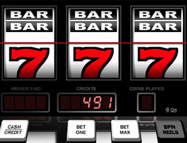 - Black Jack
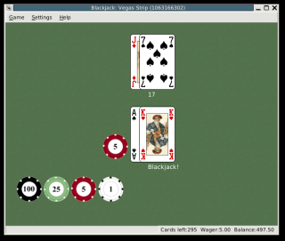 - Tic Tac Toe
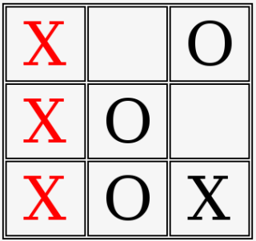 - Connect Four
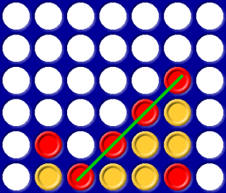
Make sure to keep it simple so you finish it and don't lose interest halfway through and never finish your game. It's important to get your games done because you're not learning the game development process if you have a bunch of half finished games on your computer.
There's one thing I want to point out for those doing Tic Tac Toe or Connect Four. AI is something you don't want to worry about too much for now. Making your game two player only or with a computer opponent that does moves at random is good enough when you're starting out.
If you've done graphics and event handling before and you're comfortable with it, you can try and go directly to the next step.
Timing, Motion, Collision, Animation
Now that you played with graphics it's time to move onto something that's real time. Here's some suggestions:- Duck Hunt
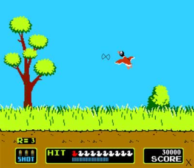 - Pong
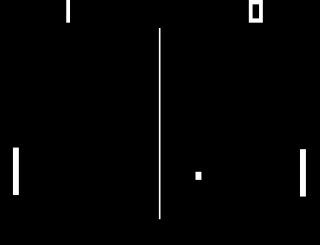 - Space Invaders
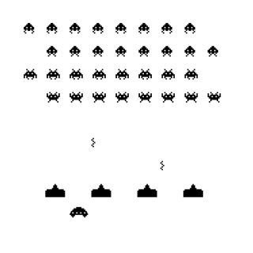 - Galaga
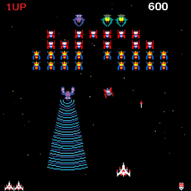 - Tetris
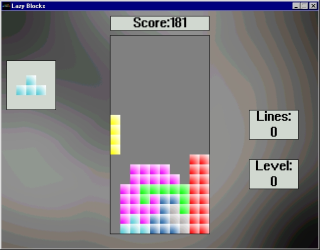
Duck Hunt and Pong are good first projects for those who have done graphics and events before. They have simple collision detection and all the important basics of real time games.
Space Invaders and Galaga make good second/third projects. They have levels so you'll have to know how to move from level to level using a state machine. You can read more about state machines here. Shoot 'em ups also require you make some sort of simple enemy patterns which serves as a stepping stone to Artificial Intelligence.
Tetris makes a good second/third project. There's quite a bit of logic that goes into make a puzzle game. It's a decent size game so you'll have to learn you to split your program into multiple source files, which you can read more about here. Don't underestimate Tetris. I did and just look at the garbled mess that is the Lazy Blocks source code.
Over Engineering
A common newbie mistake is to try to make The Greatest Game Ever and then end up over engineering. Over engineering is when they try spend bunch of time coding the greatest game/engine ever and only end up using a small part of what they code.I over engineered in my newbie days when I made made the AI for my Tic Tac Toe game. I wanted to make a game with unbeatable AI. I managed to get it done by programming the computer to know every possible trap. Sounds great doesn't it? This took over 40,000 lines of mostly copy/pasted code and a month of my free time. Later on as I studied data structures, I found out about the Minimax Algorithm which not only can do it with much less code, it can also do it better.
So learn from my mistakes and don't get overly ambitious. You're focusing on learning how to make games, not just making them.
Planning Ahead, Collision Resolution, Physics, Levels, AI
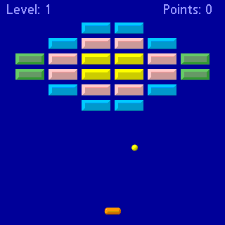 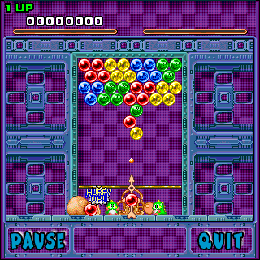
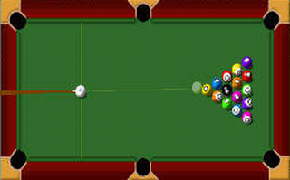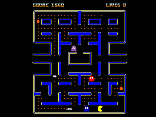
Now that you've got 2 or 3 small games under your belt it's time for your first big project.Up until now you've probably been coding as you go. That ends here. In the real world most of the software development process is done before a single line of code is typed. Nothing sucks worse than wanting to add something to your game and realizing you'll have to throw out all your code because you didn't plan ahead. Now that you have experience making games, you know what the game development process consists of. Now you can plan out your games before you make them.
Now onto your next game. Break Out and Puzzle Bobble are good 3rd projects because they involve some more advanced collision detection and physics. Physics is important because it gives the game a realistic feel. Even Super Mario Brothers had a sense of gravity and inertia. For those of you really looking to flex your physics muscle, a pool game is an excellent project.
With games like pool you not only have to detect collisions, you'll need to have to process them in a certain order. Handling collisions is a whole different beast when comparing to collision detection. While make pool or a 2D platformer may look simple, doing collision resolution operations in the right order is a tricky process not to be underestimated.
Break out and Puzzle Bobble also involve level design and having to load and free level resources. It's good experience to make a level design application for game. Level design programs allow you to easily make levels and not have to hard code your levels into your application. I have an article on making a level editor, you can check it out here.
Another thing you want to practice is Artificial Intelligence (AI). One way to practice AI is you could go back to your Tic Tac Toe or Connect Four game and add unbeatable AI. By now you should know data structures and you can use your knowledge of trees to use the Minimax Algorithm. With the Minimax Algorithm you can calculate every possible outcome of you Tic Tac Toe game and have the AI be undefeatable. It's fun to frustrate your friends with. You probably want to also learn to make varying levels of AI. A game isn't fun if you can never win.
Pac Man is an excellent way to practice AI. For one thing you need to know tree/graph data structures, and path finding algorithms like A* so the ghosts know how to move through the maze. You also have to make the ghosts work as a team. All this will be useful when making AI heavy games like Real Time Strategies. You can read more about the basics of AI here.
Side Scrollers, Action/Adventure, RPGs, RTSs, Engines
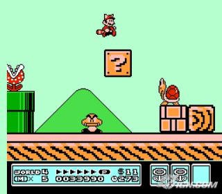 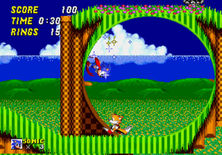
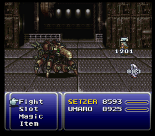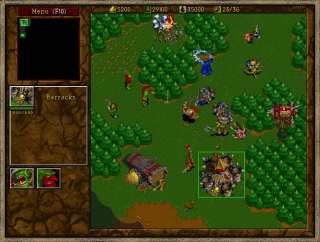
Now that you have experienced making a well planned out game you're ready make a
Action/Adventure/Side Scroller. This will be the culmination of graphics, motion, animation,
collision detection/resolution, physics, AI, software design, and everything else you learned up until this point.
For the more ambitious among you, you can try to make Strategy or Role Playing Game. Be careful because
RPGs and RTSs games are huge projects.RPGs are highly architectural, and require a lot of planning. You need plan out every weapon, armor, accessory, attack, item, spell, summon, enemy, map, boss, dungeon, you-name-it down to the littlest detail. It all has to go together seamlessly and it's not an easy task to say the least. So if your design document looks like a movie script or comic, your RPG needs a lot more work.
RTSs are just as architectural, but they also require a lot of AI. You have to do path finding, have them accept commands, and give them different behaviors based on the commands. If you've never done anything with AI before, it would best if you made a Pac Man clone first.
This will probably be the first time have you'll make an engine for your game. One thing you want to avoid is tying to make the "do anything" engine. When making an engine you don't make one that tries to do anything any game will ever need. You have a game that needs x, y, and z so you make an engine that does x, y, and z. Engines come from what a game needs, not what any game could potentially need.
Another common newbie mistake is trying to make an engine as a first project. Also it's typically a "do anything" engine. You don't need a fancy graphics engine to make pong or space invaders. With programming it's easy to get bogged down in the details. Focus on the big picture and getting your games done.
Networking
It seems everybody wants to make the next big MMO. Making online games is not something you just jump into. I learned that the hard way when I tried to make an online poker game after just finishing Tic Tac Toe.Networking a game adds so much more complexity. When one player does something, you have to send that information to all the other players. It's like your right hand doesn't know what your left hand is doing. You also have to do a balancing act with server load vs server control. The more the server program does the less the client can cheat but it also means more stress on the server. For action and other fast paced games you have to worry about latency and missed packets.
You should at least have one well planned out game finished before even attempting a networked game. As a first networking project, so you should do something where speed is not a big concern. Making a simple chat server/client is good practice. You could also go back to that Tic Tac Toe/Connect Four game you made and add online play. You can also try making an online card game, or board game.
After your first online project is done, you can shoot for something real time. In your first project you probably used TCP which makes sure that the data you send makes it across in the order you sent it. For anything with a lot of action going on, the latency TCP has is too much so you'll have to use UDP. UDP has no guarantees whether the data will be received in order or even be received at all. Since UDP doesn't have additional checks for data integrity it's faster. You'll have to deal with sacrificing ease of use of TCP for the speed of UDP and having to make your own data integrity check when you make your game.
3D Games
Before attempting 3D games you should have at least one well planned out game and have an excellent understanding of 3D vector math, linear and newtonian physics. There's much more you have to deal with here like vertex data, texturing, lighting, shading, picking, model loading, and other complicated sounding things.The good thing is you have 4 or 5 games done already, so you know the fundamentals of what it takes to make a game. You're already well acquainted with the development process and you know your abilities as a programmer. Whether a game is a 2D shooter or 3D shooter, it's still a shooter. Whether a game is a 2D RPG or a 3D RPG, it's still an RPG.
Don't take this as an excuse to skip 2D and get into 3D too early. You need to walk before you can run.
Jumping in
So you say you learn faster by jumping in and you'll learn by just making your dream 3D MMOFPSRTSRPG and you'll just pick up what you need as you need it. Well here's a guide to help you along your way:- Go to your local market.
- Buy a whole fish. Salmon or Cod is recommended but even a Catfish will do. Trout is also quite effective.
- Go home and turn on your computer.
- Start up your IDE of choice.
- Now take that fish you bought and smack yourself in the head with it.
- Repeat step 5 until the thought of "jumping in" leaves your mind.
The Journey Begins
Now that you have a general idea on what you should do, it's time to get started on your game dev'ing. I don't expect anybody to follow this guide word for word. Everybody learns differently and at different speeds. If there's anything you should take from this article, it's these 3 things:- Pace yourself.
- Make sure to get your games done.
- Focus on learning, not just making games.
Good luck to all of you on your game dev'ing.